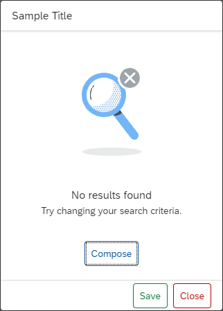

What's New in OpenUI5
1.88
What's New in OpenUI5
1.88
With
this release OpenUI5 is upgraded
from version 1.87 to 1.88.
Demo Kit Feedback
|
Demo Kit Improvements
Thank you all for using the Demo Kit feedback function! We have
received many comments and suggestions about the different Demo
Kit functionalities and we are considering all of them. Please
continue providing your valuable feedback, and we will continue
to implement it.
We have improved the following Demo Kit areas:
-
You can now choose to view the whole Demo Kit app in dark
or light mode. We have added an
Appearance setting in the
More Information menu. If you
choose Auto, the mode is based on your OS settings.
-
We have improved the readability of the Known
direct subclasses popover in the
API Reference. The subclasses
are displayed in a list with only one item per row. It
is now easier to browse through the numerous subclasses
of base controls, such as
sap.ui.core.Control. Check it out in the API
Reference.
-
You can now use the new
Ctrl
Shift
F
shortcut combination to directly enable the
global search functionality and start typing without the
need to select the search field.
-
We have improved the appearance of long API names, such
as methods and aggregations, in the API
Reference so that they are no longer
truncated.
|
New
Controls
sap.f.IllustratedMessage
(Experimental)
Empty states are moments in
the user experience where there’s no data to display. Success
states are occasions to celebrate and reward a user’s special
accomplishment or the completion of an important task. The new
IllustratedMessage control is the
recommended combination of a solution-oriented message, an
engaging illustration, and conversational tone to better
communicate empty or success states. For more information, see the API Reference and the
Samples. |
Improved
Features
|
OpenUI5 Models
The new version of OpenUI5 introduces a new
sap.ui.model.Binding#getResolvedPath
method, which provides the resolved path for a binding's path
and context. The method can be used with all bindings. For more information, see the API
Reference.
|
|
OpenUI5 OData V4 Model
If you use a list binding for an OData V4 model and have
specified a list of groupable properties in the
groupLevels array of the
$$aggregation list binding parameter, you
can now use the
sap.ui.model.odata.v4.ODataListBinding#getDownloadUrl
method to obtain the URL for the leaf level data.
For more information, see OData V4 Model, the API Reference, and
the Samples.
|
|
Test Recorder
We've introduced the option to generate code snippets with
assertions. Assertions verify that the selected property will
have exactly the same value during the test as it does at the
moment of recording. For more information, see Test Recorder.
|
Improved
Controls
|
sap.f.GridContainer
We have added a new columnsChange event, fired
when the count of grid columns changes. For more information, see the API Reference and
the Sample.
|
|
sap.gantt
We have improved the usability of the Gantt chart with the large
interval/label always visible on the time axis.
For more information, see the API Reference and
the Sample.
|
|
sap.m.UploadCollection
As of the SAPUI5 1.88 release, the Upload Collection control is
deprecated. You can use the Upload Set
(sap.m.upload.UploadSet) control that has
better handling of headers and requests, unified behavior of
instant and deferred uploads, as well as improved progress
indication.
For more information, see the API
Reference.
|
|
sap.ui.integration.widgets.Card
- To improve the loading performance of Integration cards, we
have added a new
Auto value to the
dataMode (experimental) property. It
sets the card to start the manifest processing only when the
card is in the viewport. For more information, see the Sample and
the Integrate
section in the Card Explorer.
-
In Calendar card, using the new actions
(experimental) property, you can now define an action
for each calendar item. A possible use case is when you
want to provide a link for an online event or
application. For more information, see the Sample and
the Calendar
Card section in the Card Explorer.
-
Actions can now also be used as column entries in the
Table card and as group entries in the Object card. For more information, see the Table Card
and the Object Card
sections in the Card Explorer
|
|
sap.ui.unified.Currency
As an app developer you can now define custom currency names with
a length of up to 5 symbols and values with a larger number of
digits after the decimal point. If not explicitly set, the
default maximal precision is decided based on the number of
digits after the decimal point. For more information, see the Sample.
|